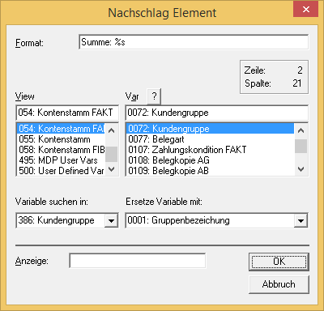
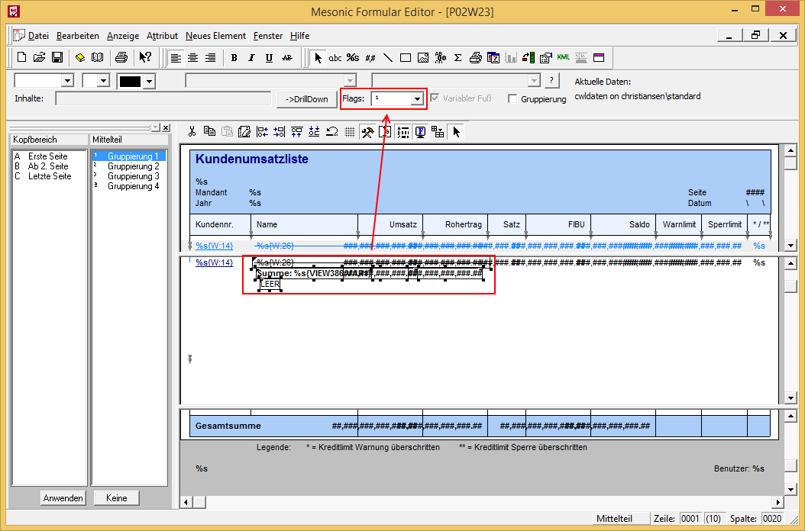
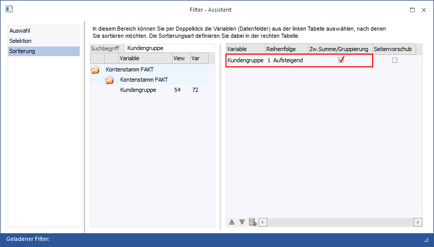
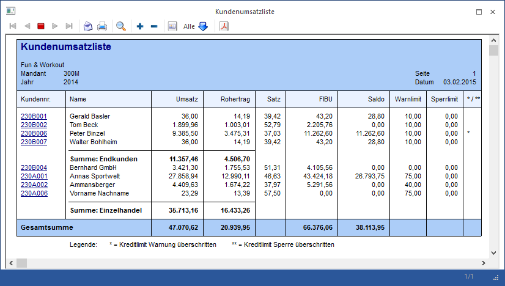

Bei Auswertungen, bei denen mit der Filter-Funktion gearbeitet wird, können im jeweiligen Formular sogenannte "Gruppensummen" eingebaut werden. Dabei stehen maximal 4 Gruppensummen zur Verfügung.
Funktion
Bei Auswertungen, wo die Filter-Funktion zur Verfügung steht, gibt es die Möglichkeit, Variablen auszuwählen, welche summiert werden sollen. Wird das Formular nicht verändert, so werden die Zwischensummen bzw. Endsummen automatisch vom Programm gebildet und angedruckt.
Sollen die Summen aber auf speziellen Positionen gedruckt werden, kann das über das Formular mit den entsprechenden Flags gesteuert werden.
Beispiel
Die Kundenumsatzliste (WinLine FAKT - Auswertungen - Kundenumsatzliste) soll mit Hilfe des Filters nach Kundengruppen sortiert werden. Zusätzlich dazu soll pro Kundengruppe der Name der Gruppe und die Summe Umsatz und Rohertrag pro Gruppe ausgegeben werden.
Durchführung
Zuerst muss die Kundenumsatzliste um das Informationsfeld der Kundengruppe bzw. der Kundengruppenbezeichnung erweitert werden. Dazu wird in einer neuen Zeile ein Nachschlag-Element erstellt, mit dem die Kundengruppenbezeichnung angedruckt wird. Hierbei muss die Verbindung über die T054 erfolgen, da auch im nachfolgenden Filter mit der T054 gearbeitet wird.

Im nächsten Schritt werden nochmals die beiden Variablen Umsatz (54/60) und Rohertrag (54/62) eingebaut. Alle drei neu definierten Einträge bekommen das Flag "1 - Group Definition 1" zugeordnet. Damit wird bestimmt, dass diese Variablen nur bei einer Zwischensumme gedruckt werden. Danach kann das Formular gespeichert werden.

Als letzter Schritt wird in der WinLine FAKT die Kundenumsatzliste unter Anwendung eines Filters ausgedruckt, wobei im Filter nach Kundengruppe sortiert wird. Hierbei muss definiert werden, dass bei einem Kundengruppenwechsel eine Zwischensumme ausgegeben werden soll.

Ergebnis
